Objetivo da atividade
O Lab 4 liga a captação feita no Lab 3 à codificação com perdas. Usamos as gravações WAV do Lab 3 para gerar versões em MP3, AAC e Ogg Vorbis, fotografamos o grupo com a webcam para gerar versões JPEG e comparamos as medidas objetivas (tamanho, taxa, banda, PSNR) com avaliações subjetivas feitas às cegas. A pergunta central do roteiro é até que ponto dá para reduzir a quantidade de dados mantendo uma qualidade percebida adequada à aplicação.
Objetivos específicos do roteiro
- Recuperar gravações WAV do Lab 3 e captar fotografias com webcam ou smartphone, documentando suas características.
- Codificar áudio em MP3, AAC e Ogg Vorbis nas taxas nominais de 48 e 128 kbit/s e imagens em JPEG com o parâmetro
-q:vdo FFmpeg em 2, 20 e 31. - Registrar tamanho, taxa efetiva (áudio) e redução percentual de dados, e relacionar as medidas com os artefatos percebidos.
- Preparar pacotes de estímulos anônimos e guardar os gabaritos separados das avaliações.
- Fazer a avaliação MUSHRA-like de áudio (0 a 100) e a comparação de imagens por pares (0 a 3) com o material de outro grupo.
- Exportar as respostas em CSV e sintetizar resultados e limitações.
Conceitos usados no relatório
- Codificação perceptual de áudio
- MP3, AAC e Vorbis dividem o sinal em bandas de frequência e quantizam cada banda com o número de bits que o modelo psicoacústico considera suficiente para que o ruído de quantização fique abaixo do limiar de mascaramento. O erro não é pequeno em amplitude: ele é colocado onde o ouvido percebe menos. Por isso a relação sinal/erro (SNR) de um arquivo codificado é baixa e mesmo assim o som pode parecer igual ao original.
- Taxa nominal e taxa efetiva
- A taxa nominal é o valor pedido ao codificador (
-b:a 48k). A taxa efetiva é o tamanho do arquivo dividido pela duração. A diferença vem do modo de controle de taxa (constante no MP3, média no AAC e no Vorbis) e dos cabeçalhos do contêiner. - MUSHRA-like
- Teste inspirado na ITU-R BS.1534: o avaliador ouve uma referência identificada e dá nota de 0 a 100 a estímulos anônimos, entre eles a própria referência escondida (referência oculta) e uma âncora de baixa qualidade. A referência oculta deve receber nota perto de 100 e serve para checar o avaliador.
- JPEG e o parâmetro -q:v
- O JPEG divide a imagem em blocos de 8 por 8 pixels, aplica a DCT e quantiza os coeficientes. No FFmpeg,
-q:vescala as tabelas de quantização: valores menores dão melhor qualidade (2 é quase sem perdas visíveis e 31 é o pior caso). - PSNR e SSIM
- Medidas objetivas de fidelidade da imagem. A PSNR compara o erro médio quadrático com o valor máximo do pixel (255). A SSIM compara média, contraste e estrutura em janelas locais e vai até 1. Nenhuma das duas substitui a avaliação subjetiva, como lembra o roteiro.
Integrantes do grupo
| Nome | RA |
|---|---|
| Fernando Hsiao | 11202231201 |
| Isabella Pierina | 11202230474 |
| Pedro Ricardo Cantu Benedetti | 11202230298 |
| Yasmin Ribeiro Santos | 11202321255 |
Os notebooks do Lab 4 organizam o material em pastas G1 a G6 dentro de MyDrive/Lab4_CSM, com trocas G1 com G2 e G3 com G4. As quatro pastas G1 a G4 que recebemos trazem gravações do nosso próprio Lab 3: conferimos a duração e o número de amostras de cada WAV original com os valores do relatório do Lab 3. Por isso tratamos G1 a G4 como quatro rodadas de produção do grupo, cada uma com uma gravação diferente.
Montagem e procedimento
O laboratório usou cinco notebooks no Google Colab, todos chamando o FFmpeg, com fones de ouvido para a escuta e a webcam do computador para as fotos. A lista abaixo resume o que cada notebook faz e o que encontramos na pasta do grupo.
- Codificação de áudio. Corta os primeiros 12 s do WAV, converte para PCM 16 bits, 44,1 kHz, estéreo (a referência) e gera seis versões: MP3, AAC e Vorbis a 48 e 128 kbit/s. Feito nas quatro pastas.
- Captação de imagens. Foto pela webcam no navegador, salva em PNG. Cinco fotos de 640 por 480 pixels, todas na pasta G2.
- Compressão JPEG. Três versões por imagem com
-q:v2, 20 e 31 e o arquivomedidas_imagem.csv. Geradas pelo script com o mesmo comando do notebook. - Avaliação de áudio. Pacote anônimo com seis estímulos e gabarito privado, escuta e notas de 0 a 100. Quatro pacotes, avaliados por 18 participantes externos.
- Avaliação de imagem. Três pares original e JPEG da composição coletiva, notas de 0 a 3. Avaliados pelos mesmos 18 participantes.
Todas as medidas, gráficos e arquivos de áudio deste relatório saem do script analise_lab4.py, que lê as pastas G1 a G4 como estão no Drive. As planilhas da avaliação externa ficam em Lab4_CSM/avaliacoes_externas/; o script as lê, liga cada estímulo ao gabarito do pacote e monta as tabelas e os gráficos de notas.
Observações sobre os notebooks
- Âncora com corte gradual. O Lab4.4 cria a âncora com
lowpass=f=3500. No FFmpeg esse filtro tem 2 polos por padrão (Butterworth de 2ª ordem, queda de 12 dB por oitava), e não o corte abrupto em 3,5 kHz da âncora da BS.1534. Medimos a atenuação nos nossos arquivos: -13,4 dB em 7 kHz e -21,1 dB em 10 kHz. Os agudos continuam audíveis, então a âncora fica mais perto dos estímulos codificados do que a da norma. Aplicar o filtro várias vezes em sequência deixaria o corte mais abrupto. - Cuidado ao reexecutar a célula do produtor. A célula do produtor termina chamando
preparar_audio(). Rodar a célula de novo sorteia outra ordem e sobrescreve o gabarito. Se alguém avaliar e depois o produtor rodar a célula outra vez, as notas deixam de corresponder ao gabarito. Conferimos os quatro pacotes atuais contra os gabaritos (seção Pacote anônimo) e eles batem. - Avaliação externa. O teste interno entre grupos parceiros rendeu uma única planilha (pacote G2, um avaliador). Para cobrir os quatro pacotes com vários avaliadores, as notas deste relatório vêm da avaliação externa descrita na próxima seção.
- Combinação de codecs e taxas. O pacote usa MP3 a 48 e 128 kbit/s, AAC só a 48 kbit/s e Vorbis só a 128 kbit/s. Como AAC e Vorbis aparecem em taxas diferentes, a comparação entre os dois mistura o efeito do codec com o da taxa. Incluir os três codecs nas duas taxas resolveria isso, com um pacote um pouco maior.
- Taxa efetiva com cabeçalho. O valor
kbps_efetivodo Lab4.1 vem dobit_ratedo contêiner, que inclui os cabeçalhos. Em trechos curtos isso pesa: ver a seção Codificação.
Avaliação externa (ação extensionista)
As avaliações deste relatório foram feitas por participantes de fora da turma, como ação extensionista do grupo. Entre 28 e 29/10/2026, 18 participantes responderam a um formulário com as duas partes do lab: o teste MUSHRA-like de um dos quatro pacotes de áudio (notas de 0 a 100) e os três pares da composição coletiva (diferença de 0 a 3). As planilhas trazem só um código por participante, sem nome ou contato.
Pasta de ações extensionistas no Google Drive Baixar todas as respostas (CSV)
Como as respostas foram tratadas
- Ligação com o gabarito. Cada resposta de áudio indica o arquivo do pacote (
S01.wavaS06.wav), e o script liga esse código à condição pelo gabarito privado do pacote. As respostas de imagem já trazem o-q:vde cada par. - Médias. As médias usam as notas preenchidas. Três estímulos ficaram sem nota (P06 no AAC a 48 kbit/s, P10 no Vorbis a 128 kbit/s e P18 no AAC a 48 kbit/s); os comentários deles aparecem nas tabelas.
- Consolidação. As respostas dos 18 participantes estão reunidas num único CSV, disponível no botão acima.
Parte A: codificação e avaliação de áudio
Gravações usadas
O roteiro pede trechos de 10 a 15 s, sem saturação, de preferência um de fala e outro de canto. Cada pasta processou uma gravação do Lab 3:
Três pontos dessa tabela afetam a leitura dos resultados:
- G2 e G3 ficaram curtas. O notebook corta em 12 s, mas os originais têm 7,29 s e 4,37 s, abaixo dos 10 s pedidos.
- A referência G4 tem saturação. São 9.284 amostras em fundo de escala, 1,75 % dos instantes. Já tínhamos visto esse corte na E2 do Lab 3. Como o roteiro pede trechos sem saturação, numa próxima rodada vale escolher outro trecho dessa estação.
- As referências G1 e G2 já tinham passado por MP3. No Lab 3 esses dois arquivos foram entregues em MP3 e convertidos para WAV depois. O espectro confirma: há uma queda brusca de 23,0 dB em 18.500 Hz na G1 e de 17,7 dB em 16.000 Hz na G2, seguida de um piso plano. É o passa-baixas do primeiro codificador MP3. Nas gravações G3 e G4, que eram PCM, a maior queda nessa faixa é de 2 dB. Nas pastas G1 e G2 o teste compara, portanto, uma segunda codificação com uma referência que já tinha perdas.
Codificação: tamanho, taxa e redução de dados
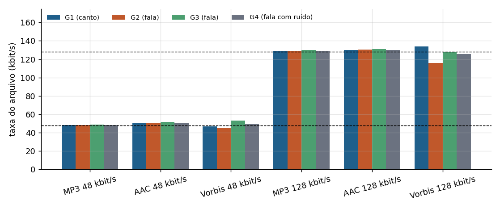
O MP3 trabalha com taxa constante: a 48 kbit/s os arquivos de G1 e G4, ambos com 12 s, têm exatamente o mesmo tamanho (72.507 bytes), embora o conteúdo seja outro. AAC e Vorbis usam taxa média e variam com o sinal. O caso mais claro é o Vorbis a 128 kbit/s na G2 (fala próxima, poucos agudos), que ficou em 115,7 kbit/s, enquanto no canto da G1 passou do nominal, com 133,9 kbit/s.
A coluna "taxa só do áudio" soma apenas os pacotes de áudio, sem o contêiner. A diferença para a taxa do arquivo é a sobrecarga de cabeçalhos: no Ogg Vorbis ela fica entre 4 e 6 kB por arquivo (o cabeçalho de configuração traz os livros de código do codificador). Na G3, com só 4,37 s, o Vorbis a 48 kbit/s mostra 53,3 kbit/s no arquivo, mas o áudio em si ocupa 45,6 kbit/s. O valor do medidas_audio.csv é o do arquivo.
Em relação ao WAV de referência (1.411,2 kbit/s), as versões a 48 kbit/s reduzem cerca de 96,5 % dos dados (razão perto de 29 para 1) e as de 128 kbit/s cerca de 91 % (razão perto de 11 para 1).
O que os codificadores cortam: espectro médio
O gráfico mostra, banda por banda (1/6 de oitava), o nível de cada versão menos o nível da referência. Zero quer dizer que a banda foi preservada. Marque as curvas que quer comparar.
As versões a 48 kbit/s de MP3 e AAC cortam a partir de 7,0 a 7,6 kHz: o codificador aplica um passa-baixas antes de codificar para gastar os poucos bits disponíveis nas bandas mais importantes. O Vorbis a 48 kbit/s mantém a banda até cerca de 14 kHz, com menos bits por banda. A 128 kbit/s o MP3 corta entre 15,8 e 16,6 kHz (G1 e G3) e o AAC em 17,3 kHz (G1). Nas outras pastas a referência tem pouco conteúdo acima de 15 kHz e não há corte mensurável. O corte em 7 kHz deve ser o artefato mais fácil de ouvir a 48 kbit/s: o som fica abafado e as consoantes perdem o brilho.
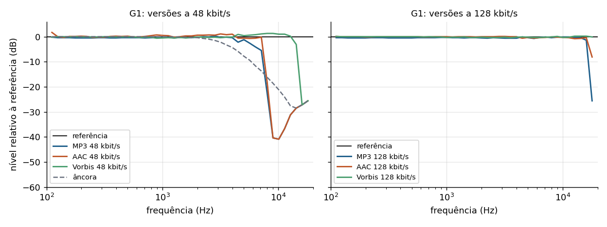
A tabela de codificação traz também a SNR depois de alinhar cada versão à referência. Ela fica entre 8 e 26 dB, valores que num sistema comum indicariam um sinal muito ruidoso. Isso mostra o que a codificação perceptual faz: o erro é grande, mas fica escondido sob o mascaramento. O AAC a 48 kbit/s tem a menor SNR em todas as pastas, de 2 a 7 dB abaixo do MP3 na mesma taxa, embora os dois cortem a banda no mesmo ponto. A SNR mede o tamanho do erro, não o quanto ele é audível, e por isso não serve como nota de qualidade de um codec perceptual.
A âncora do teste
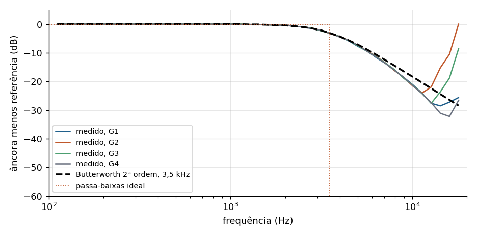
As curvas medidas seguem a do Butterworth de 2ª ordem até cerca de 5 kHz e depois se afastam aos poucos, ficando cerca de 3 dB abaixo dela em 10 kHz. É o efeito da transformação bilinear usada no filtro digital, que coloca um zero na frequência de Nyquist e aumenta a atenuação perto dela. Acima de 12 kHz as curvas de G2 e G3 sobem porque ali a referência já está no piso de ruído e a razão perde o sentido. A âncora corta os agudos de forma gradual e é bem menos degradada do que a âncora de 3,5 kHz da BS.1534, que deveria ser o pior estímulo com folga.
Pacote anônimo e conferência do gabarito
Cada pacote tem a referência identificada e seis estímulos S01 a S06. Para ter certeza de que o gabarito descreve os arquivos que estão na pasta, o script compara cada estímulo com a referência, com a âncora refeita com o mesmo filtro e com as quatro versões codificadas, e escolhe a mais parecida (maior SNR após alinhar).
Nas quatro pastas os 24 estímulos batem com o gabarito. Um detalhe: o estímulo AAC é sempre um pouco mais longo que os outros (de 208 a 869 amostras a mais, conforme a pasta). O AAC trabalha em quadros de 1.024 amostras e o último quadro é completado com silêncio, que a decodificação não removeu por inteiro. Um avaliador atento poderia notar isso pelo tamanho do arquivo, não pelo som.
Notas da avaliação MUSHRA-like
Cada pacote foi avaliado por 4 ou 5 participantes. A tabela traz a nota média de cada condição, com o número de notas entre parênteses. O seletor mostra também o resultado só com quem passou na triagem da BS.1534, ou seja, quem deu 90 ou mais à referência oculta: 9 dos 18 participantes, nenhum deles no pacote G4.
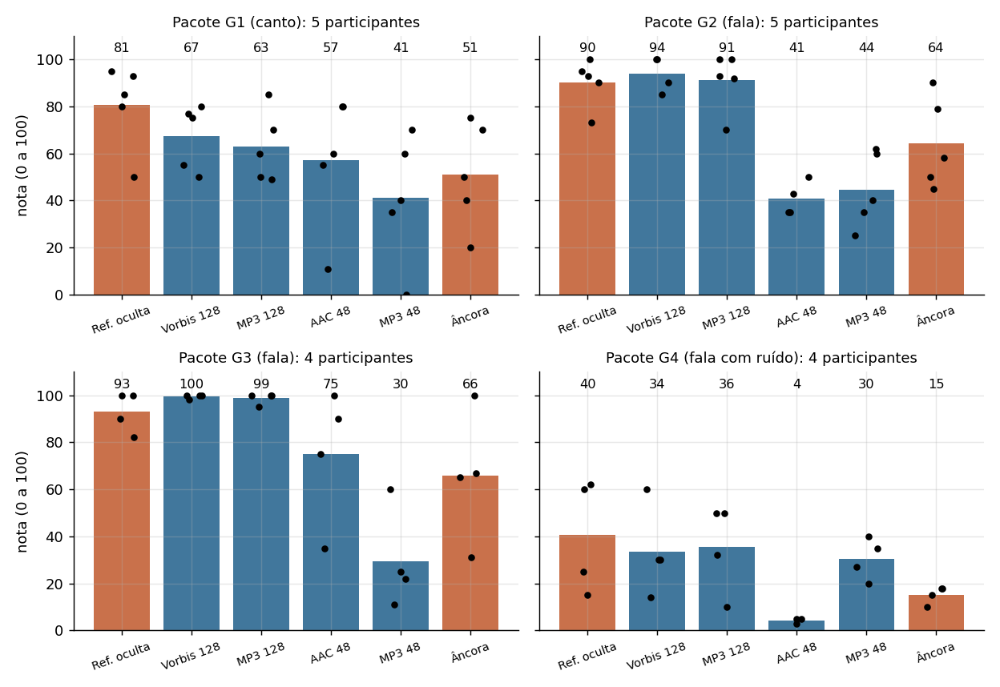
Fala (G2 e G3). O resultado é o esperado para um teste MUSHRA. As versões a 128 kbit/s ficaram no nível da referência oculta: na G2, MP3 91,0 e Vorbis 93,8 contra 90,2 da referência; na G3, 98,8 e 99,5 contra 93,0. O MP3 a 48 kbit/s caiu para 44,4 e 29,5. Em fala, os participantes não distinguiram 128 kbit/s do original, e distinguiram com folga 48 kbit/s.
Canto (G1). As notas ficaram comprimidas no meio da escala: referência 80,6, versões a 128 kbit/s entre 62,8 e 67,4, versões a 48 kbit/s entre 41,0 e 57,2, com desvio padrão de até 28,2 pontos. A ordem continua certa (referência, 128 kbit/s, 48 kbit/s), mas com menos consenso. O trio vocal captado a 1 m tem muita sala na gravação e a referência já tinha passado por MP3, o que deixa as versões mais parecidas entre si. Além disso, os cinco participantes desse pacote ouviram com um headset Bluetooth, que recodifica o áudio antes de chegar ao ouvido e também aproxima as versões.
Fala com ruído e saturação (G4). Nenhum participante deu 90 ou mais à referência oculta, que ficou com média 40,5. Os participantes julgaram a qualidade absoluta do material, que tem saturação e conversas ao fundo, e não a diferença para a referência: um deles achou a referência "a voz está mecanizada". Pela triagem da BS.1534, esse pacote precisaria de novos avaliadores. Mesmo assim o AAC a 48 kbit/s ficou claramente abaixo de tudo (4,3).
A âncora confirma a medida. A média geral da âncora foi 50,1, acima do MP3 a 48 kbit/s (37,1), e ela superou o MP3 a 48 kbit/s em G1, G2 e G3. Era de se esperar pelo filtro de 2 polos medido na seção A âncora do teste: ela abafa, mas não acrescenta o ruído de quantização nem a distorção do codificador.
A SNR não prevê a nota. O AAC a 48 kbit/s tem a menor SNR em todos os pacotes, mas teve nota maior que o MP3 a 48 kbit/s em G1 (57,2 contra 41,0) e em G3 (75,0 contra 29,5).
O que os participantes ouviram. Nos comentários, "abafado" e "chiado" aparecem sobretudo para o MP3 a 48 kbit/s e para a âncora. Voz "robótica", "metálica" ou "mecanizada" aparece em 5 dos 18 comentários do MP3 a 48 kbit/s e no máximo uma vez nas outras condições, o efeito típico de um codificador com poucos bits por banda. Nas versões a 128 kbit/s predomina "nenhuma diferença". Dois participantes acharam a referência oculta "mais nítida" ou "até melhor que o original", sinal de que o próprio original deixa dúvida em quem não o conhece.
Parte B: compressão JPEG e avaliação de imagens
Captação
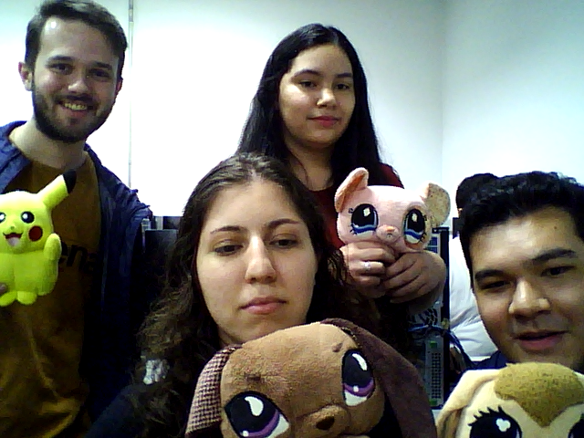
As cinco fotos foram feitas com a função de captura do Lab4.2 em (o horário está no nome do arquivo, em segundos Unix). Quatro são retratos com pelúcias e uma é a composição coletiva. Todas têm 640 por 480 pixels, a resolução da webcam, e foram salvas em PNG (sem perdas). Publicamos aqui só a composição coletiva: nas outras quatro aparecem outras pessoas do laboratório ao fundo, e o roteiro pede para não divulgar imagens identificáveis sem autorização. As medidas das cinco estão na tabela.
O roteiro sugere processar uma foto própria e uma imagem contrastante do banco de imagens do Lab 2. Esse arquivo não estava na pasta do Lab 4, então as cinco imagens processadas são fotos da webcam.
Compressão: tamanho, redução e fidelidade
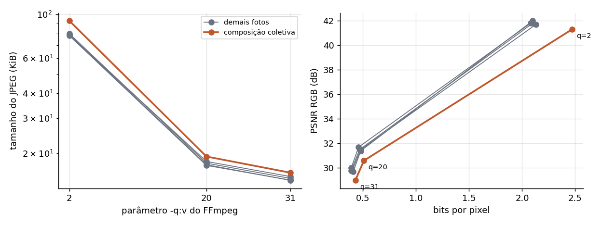
-q:v (escala logarítmica). Direita: PSNR em função dos bits por pixel. Em laranja, a composição coletiva.O PNG já é uma compressão sem perdas: a imagem bruta tem 640 × 480 × 3 = 921.600 bytes e o PNG fica com cerca de metade. Medida em relação ao PNG, a redução do JPEG é de 80,5 % com q=2, 95,7 % com q=20 e 96,4 % com q=31 (média das cinco fotos). A maior parte do ganho acontece entre q=2 e q=20. De q=20 para q=31 a composição coletiva cai só de 19.712 para 16.352 bytes, mas perde mais 1,6 dB de PSNR.
O FFmpeg gravou os três JPEGs com yuvj444p, ou seja, sem subamostragem de crominância. Câmeras e a maioria dos programas usam 4:2:0, que guarda só um quarto das amostras de cor. Os tamanhos aqui são, portanto, maiores do que seriam num JPEG comum com a mesma tabela de quantização.
Onde aparecem as diferenças: texturas, bordas e áreas uniformes
Para responder à questão (b) com dados, o script classifica cada bloco 8 por 8 da imagem original. Um terço dos blocos, os de menor desvio padrão, é "uniforme". Os demais são "borda" quando os gradientes apontam numa direção dominante (coerência do tensor de estrutura de 0,5 ou mais) e "textura" quando os gradientes apontam em várias direções.
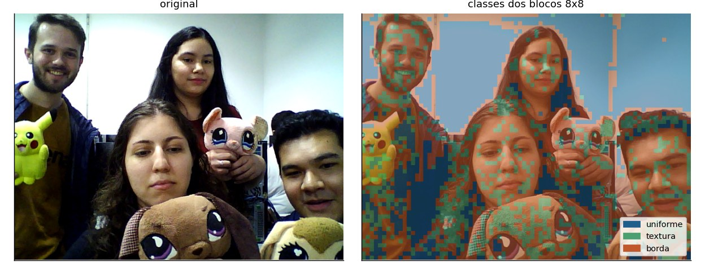
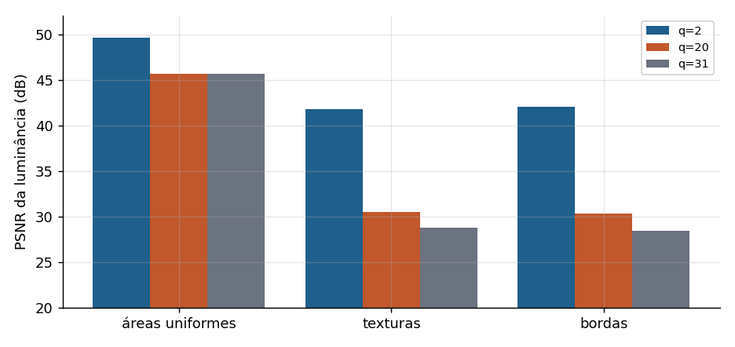
-q:v, média das cinco fotos.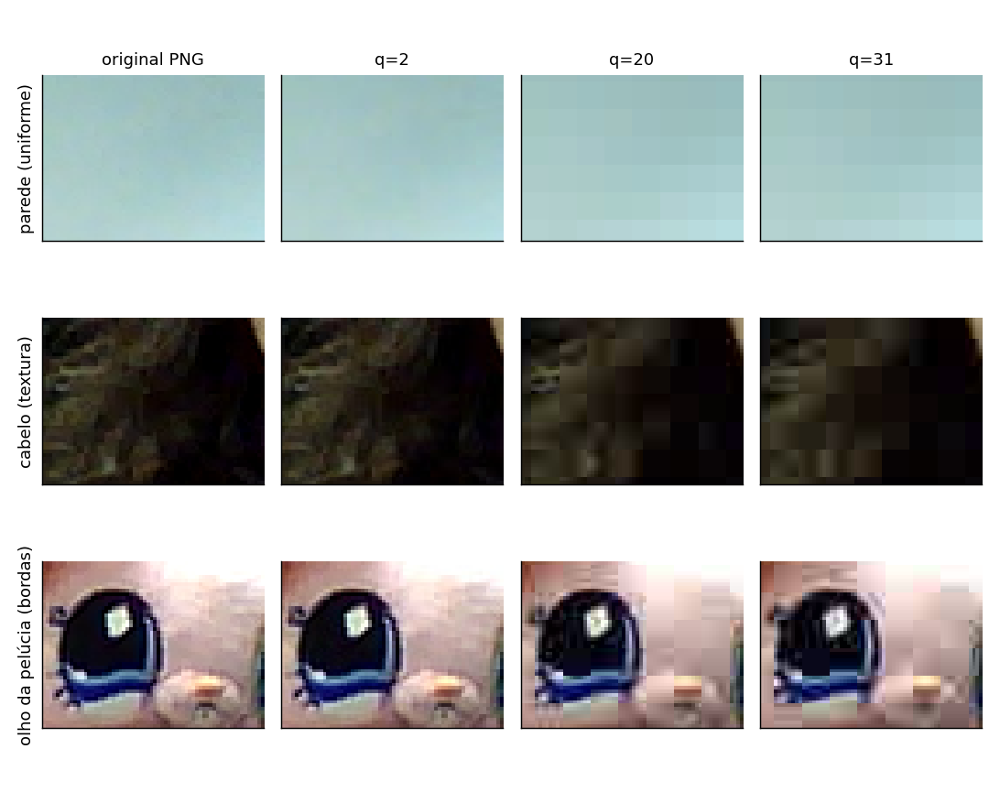
Em números, o erro é muito menor nas áreas uniformes: com q=31 a PSNR média é 45,6 dB nelas e 28,7 dB e 28,4 dB em texturas e bordas. Nos recortes, porém, a parede de q=20 e q=31 mostra os blocos de 8 por 8 como degraus de cor: num fundo liso não há detalhe que esconda a fronteira entre blocos. O indicador de blocagem (salto médio de luminância nas fronteiras de bloco menos o salto dentro dos blocos) sobe de 0,63 com q=2 para 5,74 níveis de cinza com q=31. Nas texturas o erro é maior mas fica mascarado: o cabelo vira manchas lisas, o que só se percebe com zoom. Nas bordas aparece o ruído em volta dos contornos (o olho da pelúcia ganha halos e o branco do brilho se espalha), porque a quantização remove as altas frequências da DCT que formam a transição abrupta.
Avaliação por pares
Os 18 participantes compararam os três pares da composição coletiva (original contra q=2, 20 e 31, com o lado A ou B sorteado) na escala de diferença: 0 = imperceptível, 1 = discreta, 2 = evidente, 3 = muito evidente.
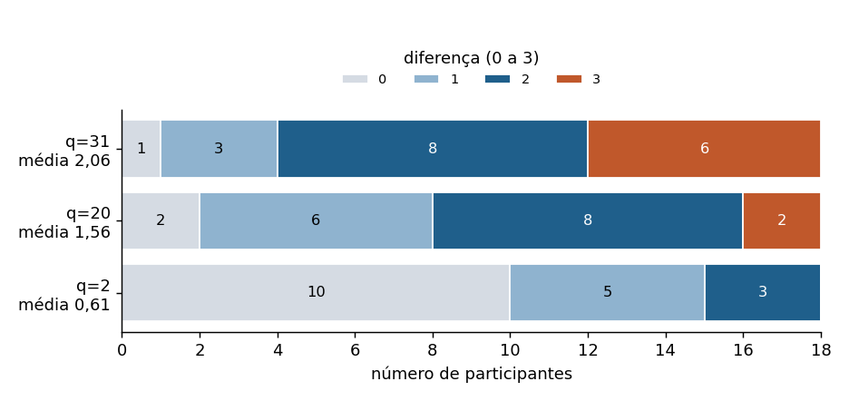
A diferença percebida cresce com o -q:v: média de 0,61 em q=2, com 10 dos 18 participantes sem ver diferença; 1,56 em q=20; e 2,06 em q=31, com 14 dos 18 dando 2 ou 3. A ordem é a mesma da PSNR (41,3 dB, 30,6 dB e 29,0 dB).
Em q=20 e q=31 os comentários falam de perda de nitidez e de detalhes, de imagem "pixelada" ou "quadriculada" e de rostos borrados, as mesmas regiões que a análise por blocos aponta: pele e parede são áreas lisas onde os blocos de 8 por 8 aparecem, e cabelo e pelúcia perdem a textura. Em q=2, sete participantes citaram cor, brilho ou contraste, mas a diferença medida é muito pequena (PSNR de 41,3 dB). Como o teste não tinha par de controle com duas imagens iguais, não dá para separar uma diferença real de uma resposta de quem esperava achar alguma. Um participante deu 0 aos três pares.
Teste cego no navegador (MUSHRA-like)
Este teste repete o Lab4.4 com os arquivos reais de cada pasta. Os seis estímulos são a referência oculta, a âncora, MP3 a 48 e 128 kbit/s, AAC a 48 kbit/s e Vorbis a 128 kbit/s. Todos foram decodificados e gravados em FLAC (sem perdas), então tocam em qualquer navegador e o formato não revela o codec. A ordem é sorteada a cada rodada. Use fones de ouvido.
Escala: 100 = igual à referência, 0 = muito pior. Dê nota à qualidade, não à diferença.
O CSV sai no mesmo formato do Lab4.4 (grupo_avaliador, grupo_produtor, avaliador, estimulo, nota_0_100), com o nome da condição numa coluna a mais. As notas não ficam salvas na página.
Ouvir todas as versões identificadas
Versões da pasta escolhida em Codificação, incluindo AAC a 128 kbit/s e Vorbis a 48 kbit/s, que não entram no pacote.
Comparador de imagem
Escolha a versão JPEG e o modo de exibição. Clique na foto para escolher o trecho ampliado, ou digite as coordenadas do canto superior esquerdo.
Quadro comparativo: redução de dados, medida objetiva e nota percebida
O roteiro pede tabelas de codec, taxa e tamanho para áudio e de parâmetro JPEG, tamanho e redução para imagem, ao lado das notas. O quadro abaixo junta as médias das pastas com as notas da avaliação externa.
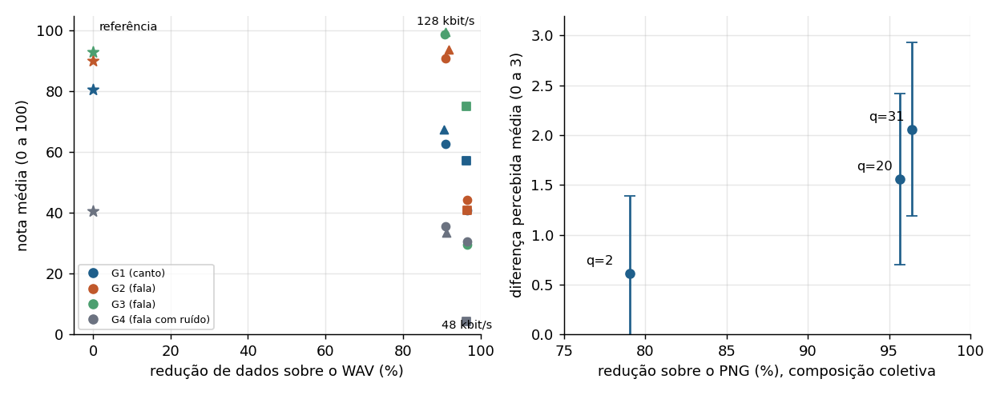
Questões do roteiro
a) Que artefatos foram percebidos em áudio com diferentes taxas e codecs? Eles dependem do tipo de sinal?
A 48 kbit/s os participantes descreveram sobretudo som abafado e chiado, e no MP3 também voz "robótica" ou "metálica" (5 dos 18 comentários). O abafamento bate com a medida: MP3 e AAC a 48 kbit/s cortam a partir de 7,0 a 7,6 kHz. A voz robótica é o efeito de quantizar as bandas com poucos bits, que deixa componentes aparecendo e sumindo de um quadro para o outro. A 128 kbit/s a resposta mais comum foi "nenhuma diferença": nos pacotes de fala G2 e G3, MP3 e Vorbis a 128 kbit/s tiveram nota igual ou maior que a da referência oculta.
Dependem do sinal, sim. Na fala (G2 e G3) a separação entre 48 e 128 kbit/s é nítida. No canto do trio (G1), com reverberação da sala e referência que já era MP3, as notas ficaram comprimidas e com mais divergência. Na fala com ruído e saturação (G4), os defeitos da própria gravação dominaram e os participantes deram notas baixas até à referência. O codificador também se adapta ao sinal: o Vorbis a 128 kbit/s usou 133,9 kbit/s no canto e 115,7 kbit/s na fala próxima.
b) Em quais regiões das imagens aparecem diferenças mais evidentes: texturas, bordas ou áreas uniformes?
O erro numérico é maior em texturas e bordas: com q=31 a PSNR cai para 28,7 dB nas texturas e 28,4 dB nas bordas, contra 45,6 dB nas áreas uniformes. O que os participantes apontaram, porém, foram os rostos e a parede, ou seja, áreas lisas e gradientes suaves onde a blocagem aparece porque nada a mascara, e a perda de detalhe no cabelo e na pelúcia. Nas bordas, como o olho da pelúcia, aparece ruído em volta do contorno, visível com zoom no comparador.
c) Como a redução percentual de dados se relaciona com as notas de qualidade percebida?
A relação não é linear: os últimos pontos percentuais de redução são os que mais custam. No áudio, passar de 128 para 48 kbit/s aumenta a redução de cerca de 91 % para 96,5 %, só 5,5 pontos a mais, e a nota média geral cai de 72,6 para 37,1 no MP3. Nos pacotes de fala G2 e G3 o MP3 cai de 91 a 99 pontos, a 128 kbit/s, para 30 a 44 pontos, a 48 kbit/s. Na imagem, de q=2 para q=20 a redução sobe 16,6 pontos percentuais e a diferença percebida sobe 0,95; de q=20 para q=31 a redução sobe só 0,7 ponto percentual e a diferença sobe mais 0,50. Por ponto percentual economizado, o passo de q=20 para q=31 custa mais de dez vezes mais em qualidade percebida que o de q=2 para q=20.
d) Quais limitações decorrem do número de avaliadores, das condições de reprodução e da escala didática?
- Número de avaliadores. São 4 ou 5 participantes por pacote de áudio. Os desvios padrão passam de 25 pontos em várias condições, maiores que muitas das diferenças entre codecs, então as médias servem para ver tendências, não para classificar codecs. Na imagem são 18 respostas por versão, o que dá um resultado mais estável.
- Triagem. Só 9 dos 18 participantes deram 90 ou mais à referência oculta. Com a regra da BS.1534, o pacote G4 ficaria sem nenhum avaliador.
- Reprodução. Cada participante usou o próprio fone e ambiente. Oito participantes ouviram com fones Bluetooth (os cinco do pacote G1, com o headset Logitech Zone Vibe 100, e três dos quatro do G4), e o áudio Bluetooth passa por outro codec com perdas (SBC ou AAC) antes de chegar ao ouvido, o que se soma ao que está sendo avaliado. Um participante ouviu numa biblioteca com pessoas conversando.
- Material. As referências G1 e G2 já tinham sido codificadas em MP3, a G4 tem saturação e os trechos G2 e G3 têm só 7,3 e 4,4 s.
- Escala e desenho do teste. Quem não conhece o MUSHRA tende a dar nota à qualidade absoluta, e não à diferença para a referência, como aconteceu no G4. A âncora de 2ª ordem ficou acima do MP3 a 48 kbit/s e não marcou o fundo da escala. AAC e Vorbis só aparecem em uma taxa cada. No teste de imagem não havia par de controle (duas imagens iguais) para medir respostas sem diferença real. São escalas didáticas: servem para explorar, não para classificar codecs.
- Medidas objetivas. PSNR, SSIM e SNR não medem percepção. A SNR do AAC a 48 kbit/s é a mais baixa, e mesmo assim ele teve nota maior que o MP3 a 48 kbit/s em dois pacotes.
Conclusões
- Redução de dados no áudio. A 48 kbit/s os arquivos ficam com cerca de 3,5 % do tamanho do WAV (razão perto de 29 para 1) e a 128 kbit/s com cerca de 9 % (razão perto de 11 para 1). O MP3 tem taxa constante e tamanho previsível; AAC e Vorbis variam com o conteúdo, de 115,7 a 133,9 no Vorbis a 128 kbit/s.
- Banda é o primeiro sacrifício. MP3 e AAC a 48 kbit/s cortam a partir de 7,0 a 7,6 kHz em todas as pastas; o Vorbis a 48 kbit/s vai até cerca de 14 kHz. A 128 kbit/s a banda útil é preservada, com corte do MP3 entre 15,8 e 16,6 kHz onde a referência tem conteúdo nessa faixa.
- SNR não é qualidade. As versões codificadas têm SNR entre 8 e 26 dB. AAC e MP3 a 48 kbit/s cortam a banda no mesmo ponto, mas o AAC tem SNR de 2 a 7 dB menor. O codificador perceptual aceita erro grande desde que mascarado.
- A âncora tem corte gradual. O
lowpassdo FFmpeg tem 2 polos: atenua -13,4 dB em 7 kHz e -21,1 dB em 10 kHz, longe do corte abrupto da BS.1534. Na avaliação externa ela ficou acima do MP3 a 48 kbit/s em três dos quatro pacotes. - Em fala, 128 kbit/s não se distingue do original. Nos pacotes G2 e G3, MP3 e Vorbis a 128 kbit/s tiveram notas de 91,0 a 99,5, no nível da referência oculta, e o MP3 a 48 kbit/s ficou entre 29,5 e 44,4. Os comentários descrevem o 48 kbit/s como abafado, com chiado e, no MP3, com voz robótica.
- O material e a escuta pesam tanto quanto o codec. No canto (G1) as notas ficaram comprimidas, e na gravação saturada e ruidosa (G4) a referência oculta teve média de 40,5 e nenhum participante passou na triagem. Só 9 dos 18 participantes deram 90 ou mais à referência oculta.
- As referências precisam ser escolhidas com cuidado. G1 e G2 vieram de MP3 (degrau de 23,0 dB e 17,7 dB no espectro), G4 tem 1,75 % dos instantes saturados e G2 e G3 têm menos de 10 s.
- JPEG: q=20 concentra quase todo o ganho. Em relação ao PNG, a redução média é de 80,5 %, 95,7 % e 96,4 % para q=2, 20 e 31, com PSNR média de 41,7 dB, 31,3 dB e 29,7 dB.
- A diferença percebida na imagem segue o q. Média de 0,61, 1,56 e 2,06 na escala de 0 a 3 para q=2, 20 e 31. O passo de q=20 para q=31 economiza só 0,7 ponto percentual e custa 0,50 ponto de diferença percebida.
- Erro e visibilidade não coincidem nas imagens. Texturas e bordas concentram o erro (PSNR perto de 28 dB com q=31), mas os participantes apontaram rostos e parede, áreas lisas onde a blocagem fica visível.
Referências
- KURASHIMA, C.; MINAMI. Lab 4: Codificação com perdas de áudio e imagem. Roteiro e notebooks Lab4.1 a Lab4.5. ESFI001, UFABC, 2026.
- ITU-R. Recommendation BS.1534: Method for the subjective assessment of intermediate quality level of audio systems (MUSHRA).
- FFMPEG. FFmpeg Filters Documentation: lowpass.
- FFMPEG. Encode/MP3 e Encode/AAC.
- WALLACE, G. K. The JPEG still picture compression standard. IEEE Transactions on Consumer Electronics, v. 38, n. 1, 1992.
- WANG, Z. et al. Image quality assessment: from error visibility to structural similarity. IEEE Transactions on Image Processing, v. 13, n. 4, 2004.
- Grupo 3. Lab 3: Testes em microfones e captação multimídia em situação real. Fonte das gravações usadas como referência.
- Grupo 3. Pasta de ações extensionistas. Google Drive.